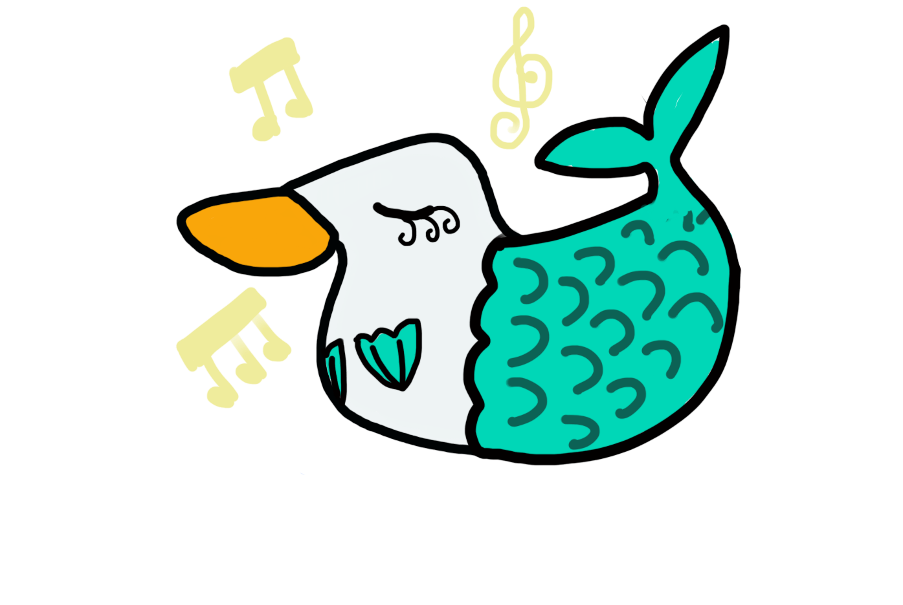
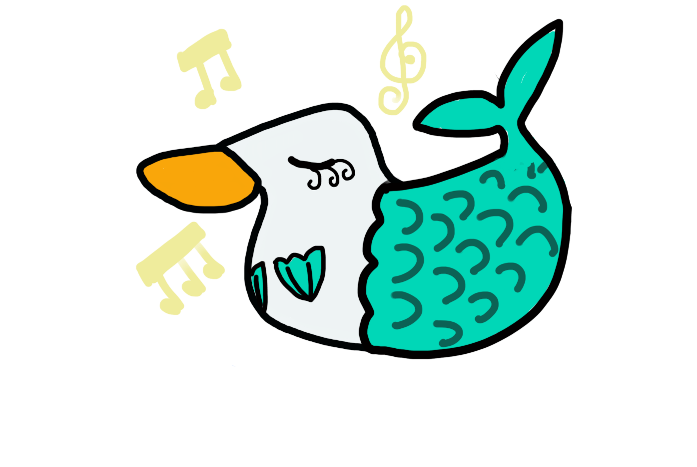
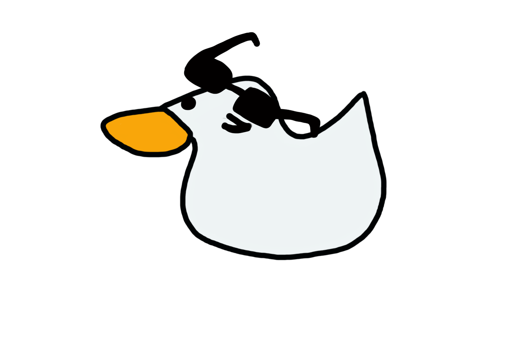
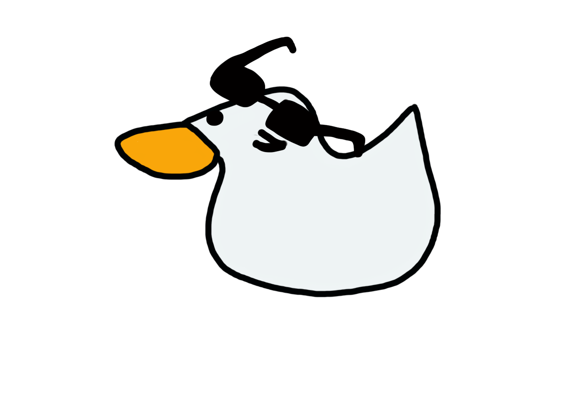
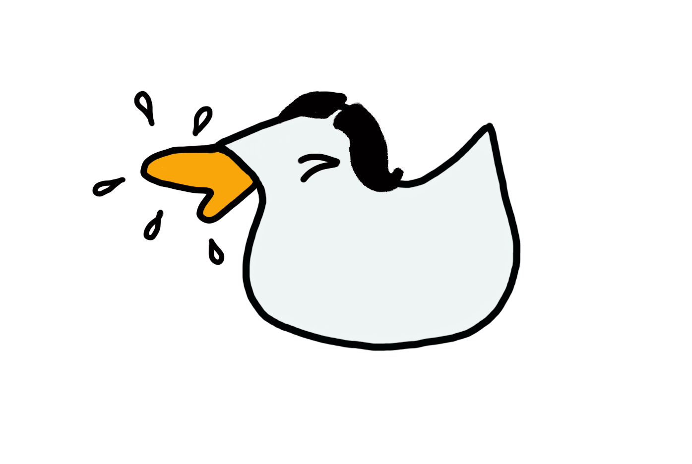
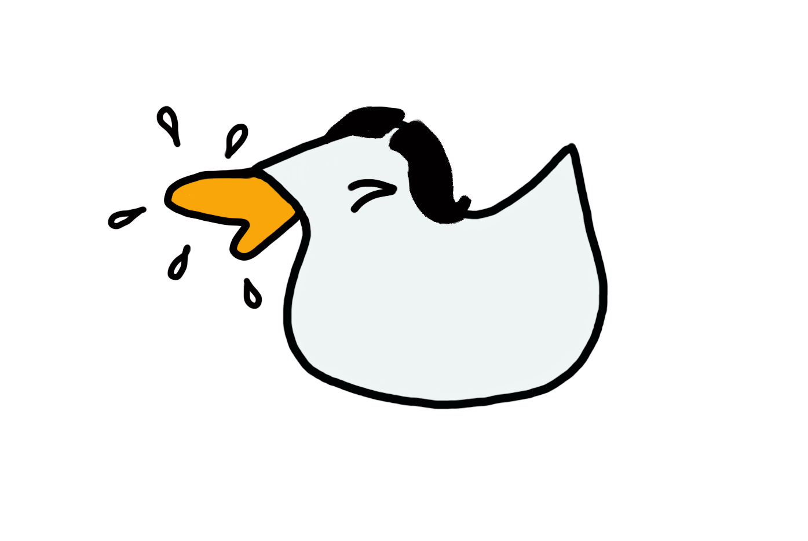

Instructions
White Duck has been learning some new JavaScript tricks and he wants
to show them to you.
Whenever you see this icon  you can click on it and see what happens! But be aware: he might be disguised!
you can click on it and see what happens! But be aware: he might be disguised!
List of tricks:
1 - Click on the logo to change the background colour. Click on it again
for a different colour. And again, and again...
2 - Click on any of the White Duck pictures in the first box for more
content.
3 - Click on the White Duck picture in the second box for a random story
featuring White Duck.
4 - Click on the little White Duck picture at the bottom of the page
to randomly see all the different White Duck costumes.
 



 



 you can click on it and see what happens! But be aware: he might be disguised!
you can click on it and see what happens! But be aware: he might be disguised!
 
